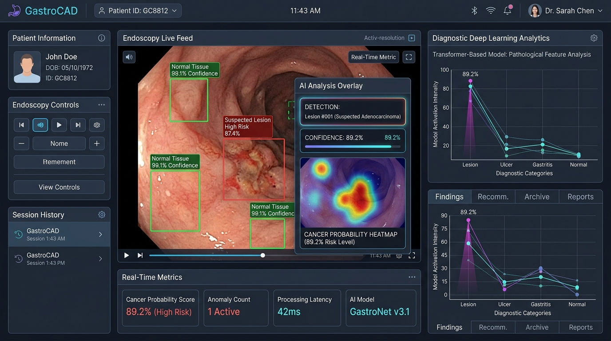

Flagship ResearchGastroCAD: Real-Time Stomach Cancer Diagnostic CAD
An AI-powered computer-aided diagnosis system utilizing transformer deep learning models and a Flutter clinical interface to detect and visualize stomach cancer and gastric disorders from real-time endoscopic imagery.
42ms Latency
89.2% F1-Score